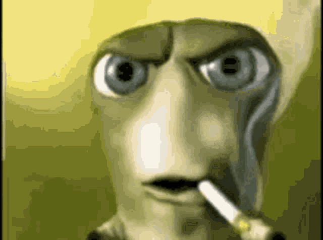
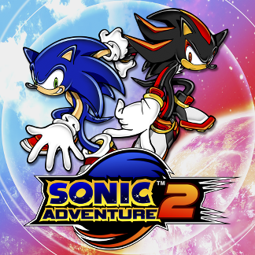
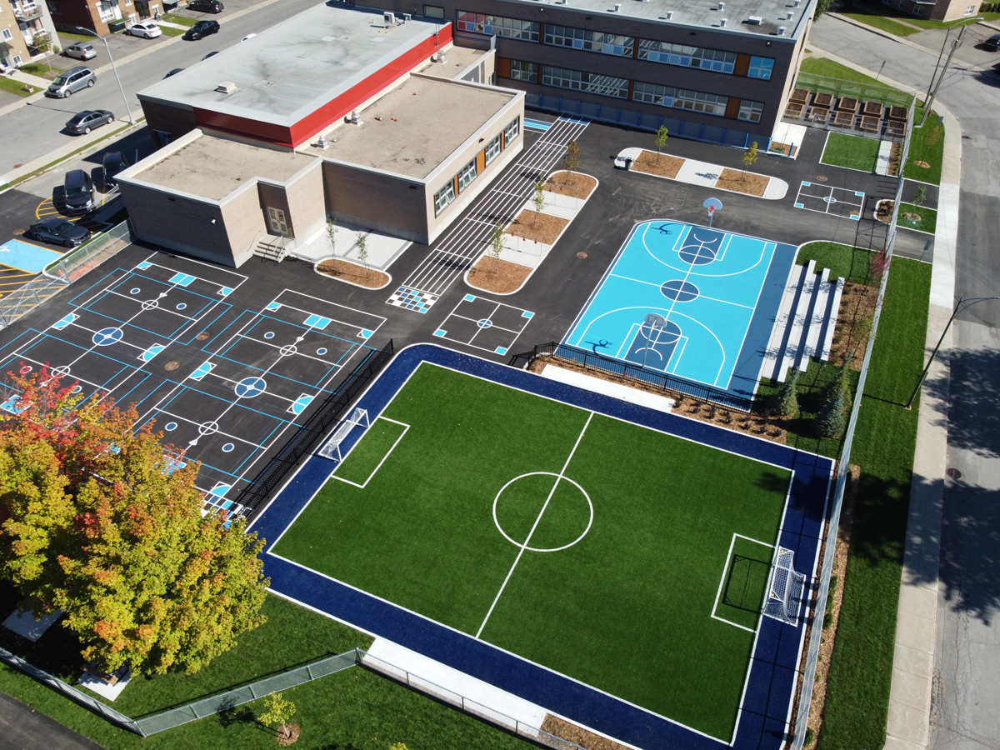
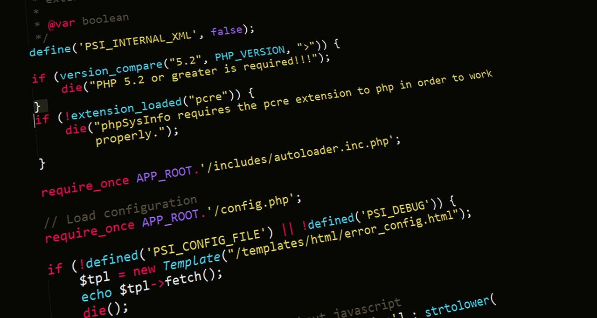

Je me présente : Adam Rhedhbane
Présentation


Bonjour, m'appel Adam Rhedhbane, et cette page web va servir pour me présenter un peu.
Je suis né a Laval, le 5 Novembre 2003, et je suis d'origine Marocaine.
Depuis que je suis petit, il y a deux choses que j'aime et que j'aime toujours autant à ce jour, et ceux-ci sont : la musique, et Sonic The Hedgehog.
(Pour trouver la source de chaques images utilisés, veuillez cliquer sur les images)
Parcours scolaire

Choses de notes à propos de moi : J'ai été à l'école à vocation musicale "Arthur-Vaillancourt" (voir l'image et notez que la cours n'etait pas autant belle quand j'y était il y a plusieurs années),
qui ce trouve très proche du Collège Lionel Groulx, où j'ai joué du violon pendant 5 ans et même fais des concerts à Lionel Groulx.
De plus, je suis allé à la Polyvalente Deux-Montagnes, oùj'ai suivi le Programme d'Éducation International (PEI).
Finalement, la derniere chose de particulier à propos de mon parcours scolaire est que je suis à ma 4ème année de cégep,
et j'espere que mon parcours ne continue pas à trop s'allonger.
Maintenant...

Maintenant, bien évidemment, je suis dans la technique d'informatique, car après 3 ans de réflexion, je penses que c'est le bon parcours pour moi.
Tout en même temps, je travail dans un dépanneur proche de chez moi pour me ramasser de l'argent et me payer mes nécessités et loisirs (tel que le gaming, comme plusieurs d'entre nous dans le programme)
Mes coordonées
Ville de
Saint-Eustache
Québec, Canada
J7P 5T6